It's the birthday of my favorite person in this entire world and I wanted to make something special for him 💙💙💙💙💙
Hewwwooooo!! First off, HAPPPYYY BIRTTHHHDAAYYY BBMAN!!! Okay, both of us know that you are still secretly a 3-year-old (who jumps on seeing any bugs in close proximity), but it's finally your birthdayyyyy today, and I wanted to make it special for you in my own little way.
I hope you loved what Mais and I made for you because I surely had a lot of fun making it, bonding with her while doing so and learning new things (like how to code discord bots [lmfao yes you guessed it, we actually had planned to make a discord bot for you, and funny thing is how both of us got the idea at the same time] ) and although it got big stressful at times, I nevertheless enjoyed making it knowing how happy and brokend it’d make you when you finally get to see it, and I hope you loved it as much as I loved making it! (alsooo I wanted to say this when you were stressing about Mais making something big for you, bbman, don’t worry, Mais has got a Srija Srija to make the gift with her jfalkdfajs)
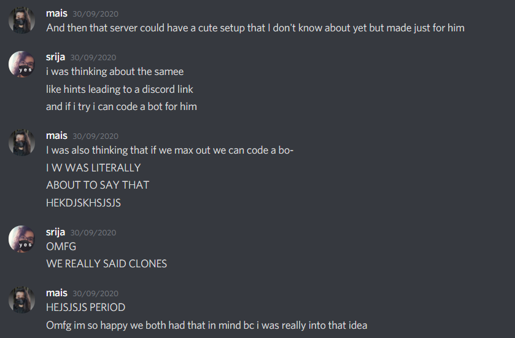
Now, let's be honest, nothing I ever do will probably be enough to express the love I feel for you or how grateful and blessed I am to have you in my life, but I am cute, so here's something that I made (ahem ahem more like tried to make) for you. SOOOOO, get readdyy for a journey full of cringe and hopefully A LOT OF LOVEEEEE!!
Before that tho, I know you specifically told me not to make anything big for you because in your words that'd make you very "BAN", b b b b b b but I had this planned for like three months now, and so I decided to be selfish and make this anyways, but you know I am shit at writing appreciation things, or writing in general so you probably can guess how much full of cringe this is gonna be. Also, I swear if you call me a simp or say I'm lovebombing hmpffff >.<
I always feel I never appreciate you enough so I wanted to do this, okkiii?
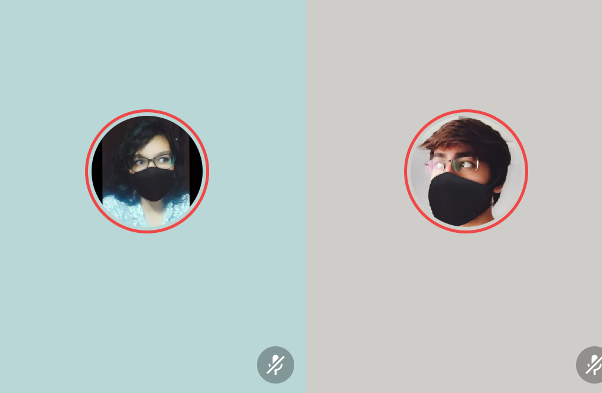
Annnyyywaayyss a-threee a-twwooo a-oneeeee gooooo!!
"You came like a storm"
We really started bonding a day after the cyclone, and I like to think that you came in like a cyclone in my life as well - I didn't see you coming, you came in like a storm, and before I even knew, you had swept me off my feet and taken me to a world I didn't know could exist but a world I soon realized I'd like to spend my entire life in. And it's not that the world is perfect, or it doesn't have any gay, but that world has you by my side - and that's what makes it cute.
"Two punks in love, you had my back from day one"
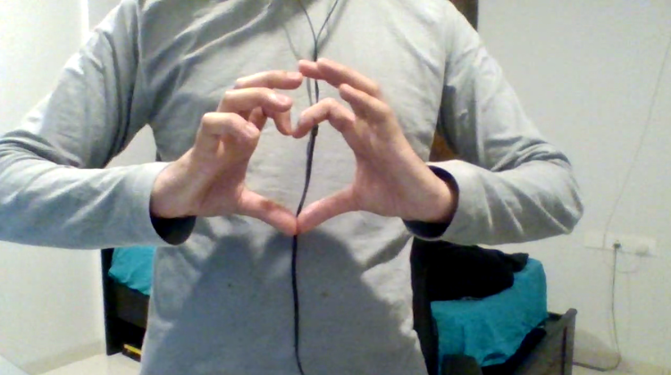
Remember how we bonded over that music VC and I finally found someone who has heard this song?
For some reason, we always clicked - it never felt like we needed to force to keep the conversations going, it never felt like only one of us was trying hard, while the other wanted it to end as soon as possible, everything always felt easy and that's what makes our bond special bb! So, thank you for talking to me that one fine morning, yes, that was a shitty morning, but what matters is how you made every morning cute from there on - giving me a reason to be excited when I wake up every day.
"I like me better when I'm with you"
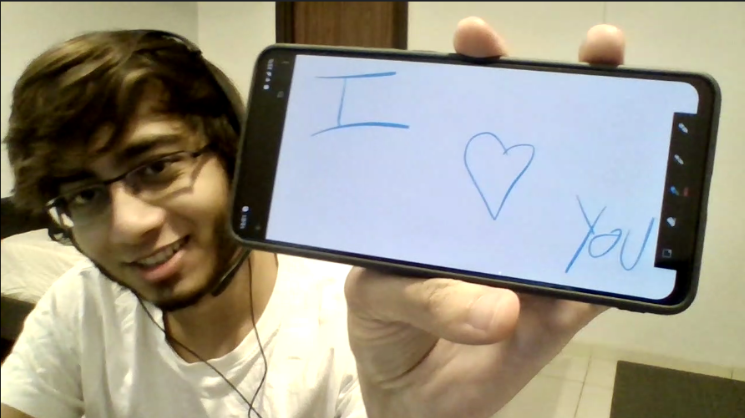
I really do! I love spending my time with you, being on a VC all day (aaahh the VCs in bed jflaskfj), and although we are not really spending all our time talking to each other, it's just a really safe and cute feeling knowing that no matter what I do, I have my "the one" with me. And it's not only about the VCs - every time you text me, I often catch myself smiling idiotically at the screen as my heart goes omg it's my pyaaraaa!!!
"When everything crashes your eyes are where I feel safe"
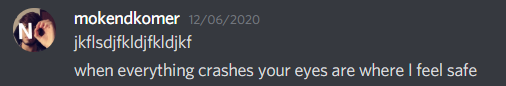
The last few months have been kind of hard for me - Covid and everything else really left me feeling drained and exhausted, but every time I felt gay, or I felt sad I ended up coming back to you – because you feel like home.
I had you to ground me, and to make me look at the parts of the picture I missed. I remember you telling one night, how we are really similar, and yet we help each other look at things that we miss, and how we complete the picture together, and bb, thank you for being there for completing the picture for me all the time. You always know the right things to say to me, and by the end of each conversation that we have, I end up feeling significantly better and happier, all thanks to you and your gay
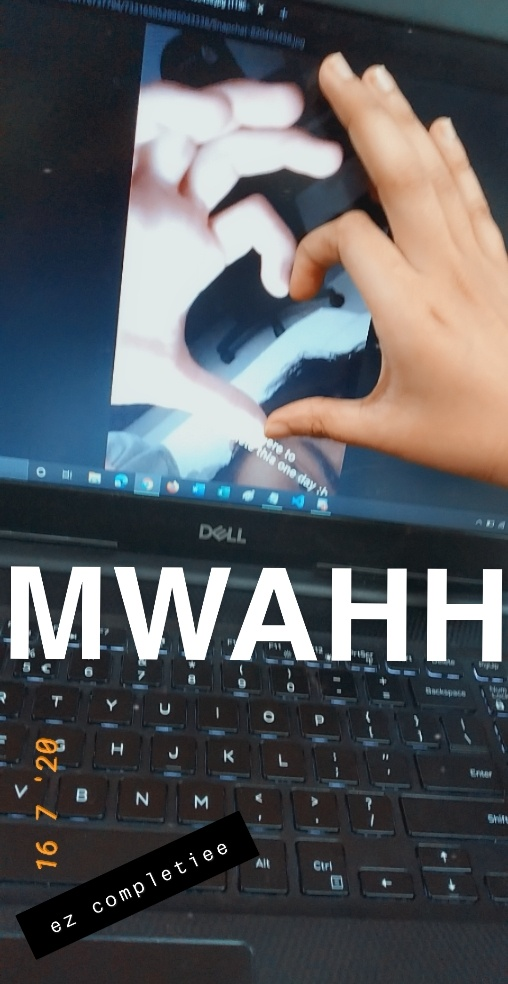
"So make me laugh again"
You make me laugh like no one does! Okay to be fair thoooo no one has ever deep throated a snickers bar or put on fake boobs, or has done panda impressions for me, or worn a towel around their neck while talking to Nadeem because of how aunty-like they are being, and now that I think about it, I can probably make a list of all those absolutely hilarious and special moments, but you get it right?
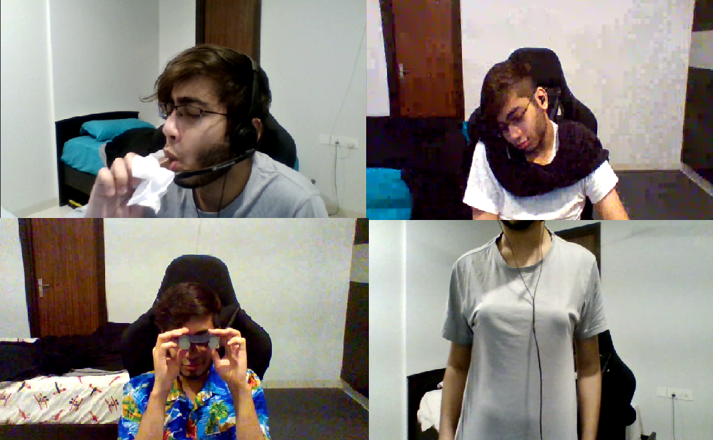
You are probably the most mature and the most baby person I have ever met, and it confuzzles me how you do both of those perfectly - transforming from a 3-year-old to a 30-year-old in a matter of seconds. But I love you for that, and for making me laugh till I have tears in my eyes. I don't think that I have ever felt so happy just being in someone's presence before this and I don't want to have this feeling with anyone else either, because I know I won’t need anyone else when I have you, my mokendbear!
"But if only you could see yourself in my eyes, you’d see you shine, you shine"
Something that I have always felt about you is that you never appreciate how cute and amazing and perfect you are. Always there to help people out and protect the ones who are close and dear to you - always ready to be a Sanjay, and letting people see the logical and rational part of things - something that most of us miss while we are thinking with our heart and not our head. I remember the day before Mais' birthday, when you were making a gift for her, and this is what I wrote in my diary-
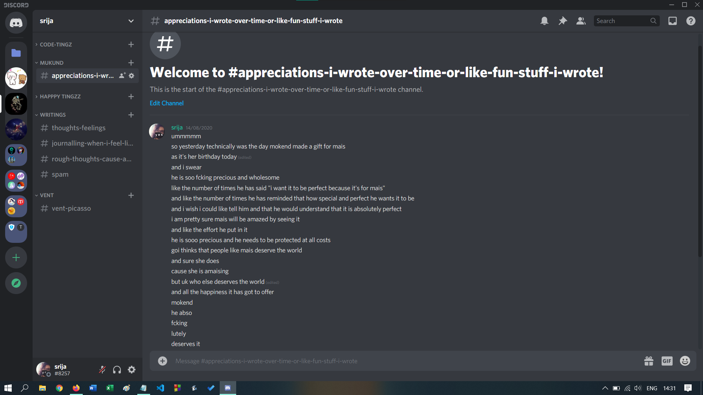
And reading through that, I still mean every word written there, I really do! It fills my heart with joy and happiness when I talk to your friends and they say how grateful they are to have someone like you in their lives, and how much they appreciate you. I always say this and I WILL always say this, but you really deserve all the happiness the world has got to offer, and I really hope you get all that happiness!
"We were wrecks before we crashed into each other"
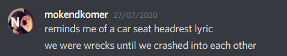
One thing that I love about us, and about you is how we always get each other. It's like we are always on the same page, and even when we are not, we always end up getting each other, and understanding what the other person meant. It makes me happy knowing that I share this special bond of understanding with you and not with anyone else, it makes me happy knowing that even when I feel that no one gets me and that this world was never meant to be a place for me, I have you!
It makes me happy knowing that no matter what, I can always be 100% myself when I am with you, that we really keep no walls between us. I do sometimes feel that I am not good enough for you, and if I have made you feel like that as well, I am sorry, but I promise never stop trying to be the best version of myself for you, bb.
Letting you in my diary server was honestly a huge step for me, because I never thought I could be this open with someone, but now whenever I see your name next to mine in that server, I get this very warm, fuzzy and safe feeling knowing how I have finally found my safe person.
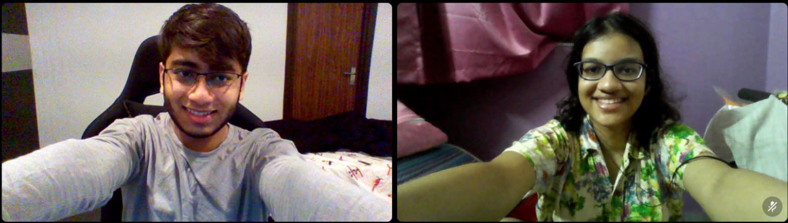
And I love how that reciprocates, and how you tell me everything, all the stories from your past to the things you won't really want to share with anyone else, like how you want to stop tickling your pickle.
Thank you for being that person who listens to the thoughts I'm not proud to have, thank you for being the person who trusts me enough and feels safe enough to let me know about the thoughts you have or things you did that you are not proud of - both really mean a lot to me, I feel that it brings us biglyyy close.
At this point I feel it’s almost impossible to keep something from you, and I can’t wait to tell you everything about making your gifts aaahhhh, like the moment I absolutely felt like James Bond for being able to figure out Daniel’s discord ID. Also, I’m sorry for lying to you for the past couple of days, but it’s a bit too weird to tell that I’m working on your birthday gift when you ask what I am doing, and I really wanted this to be special bb.
"My heart's been borrowed and yours has been blue💙"
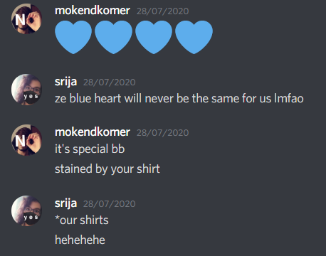
The first time I heard this lyric, I didn't understand what it meant. The next time I heard it, I didn't understand either, however this time it felt special, because whenever I think of a blue heart, it reminds me of you. And it makes me smile, knowing and realizing that I have someone this special to me. I'll be honest, I never thought I'd ever fall in love with someone, I never even understood how two people fell in love with each other. And then you came in my life, making me feel loved and cared, making me feel like I am someone special and not just someone you'd befriend for getting class notes. You loved me for being who I am, for my srijaness and for all the stupid things I do, and you made me feel things I have never felt before this.
Now, I know this sounds weird, but thank you for stealing my heart and painting it blue my thiefman!
"Don't worry, you and me won't be alone no more"
Both of us had people we wanted to have in our lives forever, and they left us - and honestly, it hurts knowing that you had to go through that pain, because you don't deserve any of that. It sucks knowing that there was a point when you considered Turt to be your only friend - because you had to come back to India and had no one else. But what really matters is the fact that you came out stronger at the end of all of it.
I don't know if I am still awake or asleep by the time you read this, but I want you to know that no matter what, I am always there with you and I will always be here. I know for sure that even when something comes up between us, we will sort it out cutely cause clonecutie things and because of that fact that you are too precious to ever let go. You're the treasure in my life that I'll treasure forever.
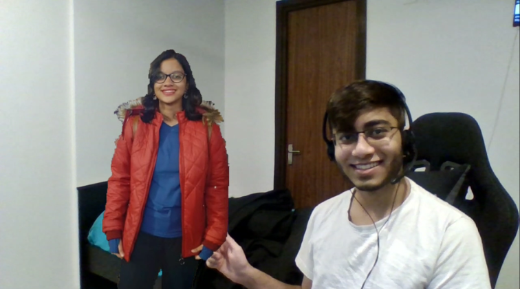
Okay, imma stop now, before this thing ends up being a novel, because it's already longer than I expected it to be (and why does that phrase remind me of hardy now, right anywayss). I honestly hate how many things I couldn’t include because aahhh every time I think about this, all that I can think is how much more I could have done to make it as perfect as you are >.<
If you haven’t caught on it yet, I based everything off song lyrics because of the music VC we once had or when we made bbList and preciousList or when we used to music together at night, and those are memories I know I will treasure forever.
I wish I was there to give you a big Srija hug, but it really makes me happy and jumpy knowing that next year I will be there with you and there to give you all the Srija hugs and kisses that I'd ever want to give to a Mokend.
At the end, I want you to remember
I 💙 you
BUT MOST IMPORTANTLYYY